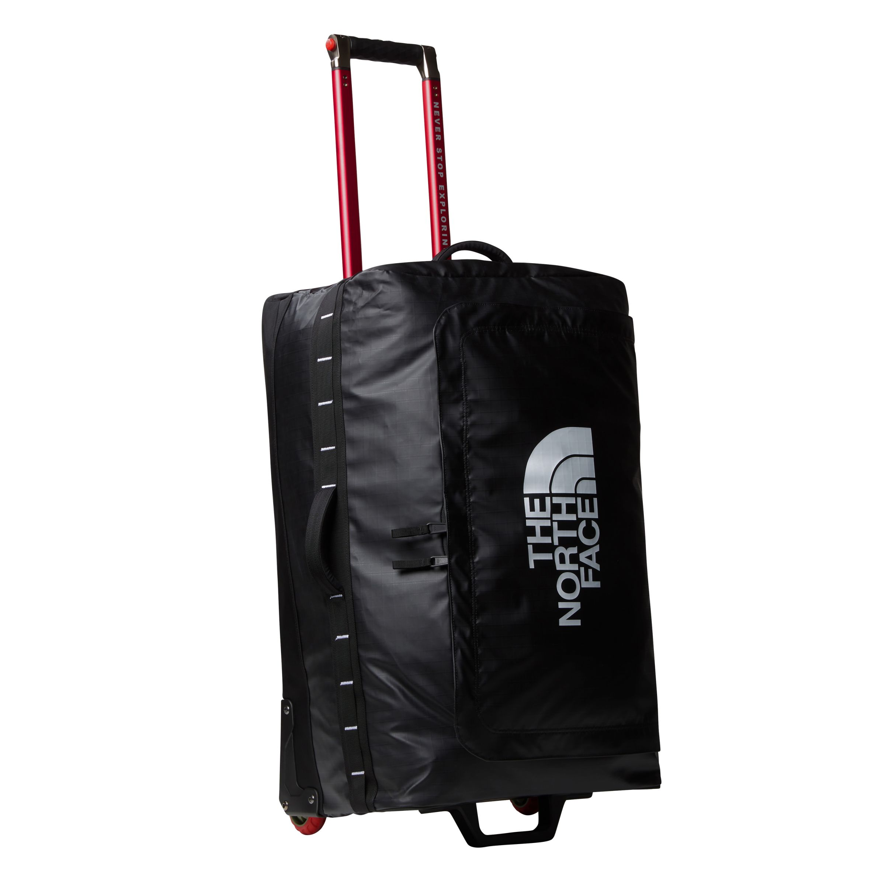

Сумка ТЛ34

Источником вдохновения для The North Face Base Camp Voyager 29 послужил легендарный баул Base Camp Voyager. Изготовленная из того же прочного, но лёгкого полиэстера 300D, Voyager 29 имеет неубиваемое шасси и предназначена для путешествий вокруг света. Практичная, удобная и функциональная сумка может похвастаться продуманной организацией и гладко скользящими колёсами.
Подробности:
- Материал сумки - переработанный полиэстер 300D с покрытием из термопластичного полиуретана. Задняя панель изготовлена из баллистического нейлона 840D со стойкой водоотталкивающей пропиткой без фторуглеродов в составе (Non-PFC).
- Крепкое шасси выдержит многократную и жёсткую эксплуатацию в путешествиях вокруг света. Снова и снова.
- Широкая телескопическая ручка и два колеса с гладким вращением позволяют легко перемещать сумку по территории аэропорта или по городу.
- Верхняя, нижняя и боковые короткие ручки упрощают транспортировку сумки.
- Доступ в основное пространство осуществляется через двухзамковую молнию под клапаном.
- Большой внутренний отсек имеет разделитель на молнии, чтобы отделить чистые вещи от грязных или мокрых.
- Есть большой сетчатый внутренний карман.
- Внутренние компрессионные стропы помогут вам вместить в сумку немного больше. И ещё немного. А также закрепить содержимое.
- Снаружи есть дополнительный карман на молнии для быстрого доступа к документам, кошельку, ключам и другим предметам.
- Внешние цепочки петель позволяют зафиксировать снаряжение снаружи или прикрепить сумку к транспортному средству.
Страна бренда: США